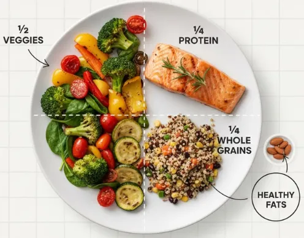
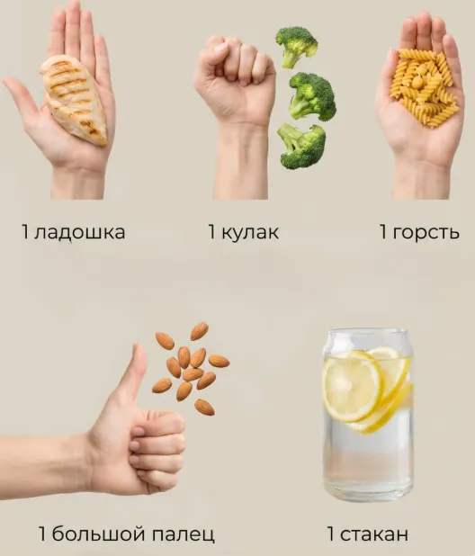

Самый простой и наглядный способ питаться правильно — использовать принцип «Гарвардской тарелки». Этот метод не требует весов, калькулятора и сложных расчетов. Вам достаточно визуально разделить свою тарелку на четыре части, чтобы понять, каких нутриентов в вашем приеме пищи слишком много, а каких не хватает.
Половина тарелки (50%) должна быть отдана овощам и фруктам. Это могут быть свежие салаты, тушеные или запеченные овощи, зелень. Именно они обеспечивают организм клетчаткой, витаминами и минералами, дают объем и создают чувство сытости, при этом содержат минимум калорий. Чем ярче и разнообразнее цвета на этой половине, тем богаче химический состав вашей еды.
Четверть тарелки (25%) отводится под сложные углеводы. Это главный источник энергии для мозга и мышц. Выбирайте цельнозерновые продукты: гречку, бурый рис, киноа, овсянку, макароны из твердых сортов пшеницы или цельнозерновой хлеб. Они расщепляются медленно, поддерживая стабильный уровень сахара в крови и обеспечивая вас энергией на несколько часов.
Оставшаяся четверть (25%) — это белковая часть. Белок является строительным материалом для наших клеток, мышц и гормонов. Это может быть рыба, мясо птицы, яйца, тофу или бобовые. Белок также отлично насыщает, помогая избежать перекусов на бегу.
Помимо основных продуктов, не забывайте о полезных жирах. Добавьте к приему пищи столовую ложку оливкового масла, немного авокадо или горсть орехов. Жиры помогают усвоить витамины A, D, E и K и необходимы для здоровья нервной системы. А запивать еду лучше всего обычной чистой водой.

Если у вас нет под рукой тарелки правильного размера, используйте «метод ладони». Порция белка равна размеру вашей ладони без пальцев, порция сложных углеводов — объему сжатого кулака, порция овощей должна занимать две горсти, а порция жиров — размер большого пальца.
Помните, что сбалансированная тарелка — это не жесткое правило, а удобный ориентир. Не обязательно взвешивать каждый грамм. Если сегодня на вашей тарелке больше белка, а завтра — больше овощей, это абсолютно нормально. Главное — придерживаться принципа разнообразия и стараться, чтобы в каждом основном приеме пищи присутствовали все три компонента: овощи, сложные углеводы и качественный белок.